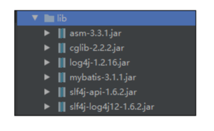

0.需要导入的包

1.先创建Mapper接口
再写入要实现的方法,再创建Mapper.xml文件
<?xml version="1.0" encoding="UTF-8" ?>
<!-- 对象的映射关系 -->
<mapper namespace="Mapper接口的全限定名">
<resultMap id="dapt_Mapping" type="com.xmg.day02.many2one.Department">
<id column="id" property="id"/>
<result column="name" property="name"/>
</resultMap>
<insert id="add" keyColumn="id" keyProperty="id" useGeneratedKeys="true" >
insert into dept(name) value (#{name})
</insert>
<select id="get" resultMap="dapt_Mapping" >
select id, name from dept where id=#{id}
</select>
</mapper>2. 创建一个 xxx.cfg.xml文件
<?xml version="1.0" encoding="UTF-8" ?>
<!-- 针对没有把提示框架的配置 -->
<configuration>
<properties resource="db.properties" />
<!-- 对Mybatis的运行状态进行配置 -->
<settings>
<!-- 开启延迟加载
全局启用或禁用延迟加载。当禁用时, 所有关联对象都会即时加载
-->
<setting name="lazyLoadingEnabled" value="true"/>
<!-- 当启用时, 有延迟加载属性的对象在被调用时将会完全加载任意属性.否则, 每种属性将会按需要加载,默认是开启的 -->
<setting name="aggressiveLazyLoading" value="false"/>
<!-- Object对象上面的哪些方法触发延迟加载. 一般只写clone -->
<setting name="lazyLoadTriggerMethods" value="clone"/>
</settings>
<!-- 使用typeAliases为类型取别名 -->
<typeAliases> <typeAlias type="domain的全限定名" alias="User" />
<typeAlias type="domain的全限定名" alias="Employee" />
<typeAlias type="domain的全限定名" alias="Department" />
</typeAliases>
<!-- 环境 -->
<environments default="default">
<environment id="default">
<!-- 配置事务管理器 -->
<transactionManager type="JDBC" />
<!-- 数据库连接池 -->
<dataSource type="POOLED" >
<property name="driver" value="${driverClassName}"/>
<property name="url" value="${url}"/>
<property name="username" value="${username}"/>
<property name="password" value="${password}"/>
</dataSource>
</environment>
</environments>
<!-- 告诉Mybatis要管理mapper文件 -->
<mappers>
<mapper resource="Mapper.xml的全限定名" />
</mappers>
</configuration>3. many2one
1 <?xml version="1.0" encoding="UTF-8" ?>
2 <!DOCTYPE mapper
3 PUBLIC "-//mybatis.org//DTD Mapper 3.0//EN"
4 "http://mybatis.org/dtd/mybatis-3-mapper.dtd">
5 <!-- 对象的映射关系 -->
6 <mapper namespace="Mapper接口的全限定名">
7
8 <resultMap id="emp_Mapping" type="domain的全限定名">
9 <id column="id" property="id"/>
10 <result column="name" property="name"/>
11 <!-- 关联的映射 : 使用额外的SQL关联数据库属性 -->
12 <association property="dept" javaType="Department" column="dept_id"
13 select="Mapper接口的全限定名.get"/>
14 </resultMap>
15
16 <!-- 内联关联 -->
17 <resultMap id="list_mapping" type="domain的全限定名">
18 <id column="id" property="id"/>
19 <result column="name" property="name"/>
20
21 <!-- 使用内联的方式映射 -->
22 <association property="dept" javaType="Department" >
23 <id column="did" property="id" />
24 <result column="dname" property="name" />
25 </association>
26 </resultMap>
27
28
29 <insert id="add" keyColumn="id" keyProperty="id" useGeneratedKeys="true">
30 inset into employee(name, dept_id) value (#{name}, #{dept.id})
31 </insert>
32 // resultMap: 返回的是自己在resultMap中定义的
33 <select id="get" resultMap="emp_Mapping">
34 select id, name, dept_id from employee where id=#{id}
35 </select>
36
37 <select id="list" resultMap="list_mapping">
38 select e.id, e.name, d.id as did, d.name as dname
39 from employee e left join dept d on e.dept_id = d.id
40 </select>
41 // resultType: 返回的是在domain中定义的
42 <select id="autoComplateList" resultType="domain的全限定名" >
43 select id,name from employee
44 </select>
45 </mapper>4. 测试
import org.junit.Test;
import java.util.List;
public class Many2OneTest {
@Test
public void testSave() {
Department d = new Department();
d.setName("d");
Employee e = new Employee();
e.setName("e");
e.setDept(d);
SqlSession session = MybatisUtil.openSession();
// session.getMapper是获取Department的字节码
DepartmentMapper dmapper = session.getMapper(DepartmentMapper.class);
EmployeeMapper emapper = session.getMapper(EmployeeMapper.class);
dmapper.add(d);
emapper.add(e);
// 提交事务
session.commit();
// 关闭资源
session.close();
}
@Test
public void testGet() {
SqlSession session = MybatisUtil.openSession();
DepartmentMapper dmapper = session.getMapper(DepartmentMapper.class);
EmployeeMapper emapper = session.getMapper(EmployeeMapper.class);
Employee e = emapper.get(7L);
Department d = e.getDept();
System.out.println(e);
System.out.println(d);
session.close();
}
@Test
public void testCache() {
SqlSession session = MybatisUtil.openSession();
EmployeeMapper emapper = session.getMapper(EmployeeMapper.class);
emapper.get(7L);
session.clearCache();
emapper.get(7L);
session.close();
}
@Test
public void testList() {
SqlSession session = MybatisUtil.openSession();
EmployeeMapper emapper = session.getMapper(EmployeeMapper.class);
List<Employee> es = emapper.list();
for (Employee e : es) {
System.out.println(e.getName() + " " + e.getDept().getId());
}
session.close();
}
@Test
public void testAutoList() {
SqlSession session = MybatisUtil.openSession();
EmployeeMapper emapper = session.getMapper(EmployeeMapper.class);
List<Employee> es = emapper.autoComplateList();
System.out.println(es);
session.close();
}
}5. MyUtil
import org.apache.ibatis.io.Resources;
import org.apache.ibatis.session.SqlSession;
import org.apache.ibatis.session.SqlSessionFactory;
import org.apache.ibatis.session.SqlSessionFactoryBuilder;
import java.io.IOException;
public class MybatisUtil {
private static MybatisUtil instance = new MybatisUtil();
private SqlSessionFactory factory;
private MybatisUtil() {
try {
factory = new SqlSessionFactoryBuilder()
.build(Resources.getResourceAsReader("mybatis.cfg.xml"));
} catch (IOException e) {
e.printStackTrace();
}
}
public static SqlSession openSession() {
return instance.factory.openSession();
}
public static <T> T getMapper(Class<T> tClass) {
SqlSession session = openSession();
T mapper = session.getMapper(tClass);
return mapper;
}
}